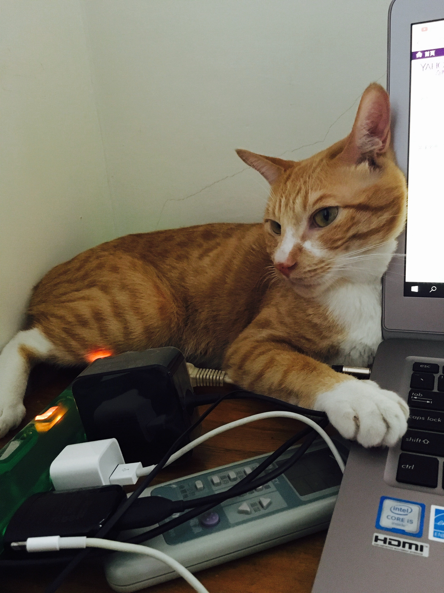
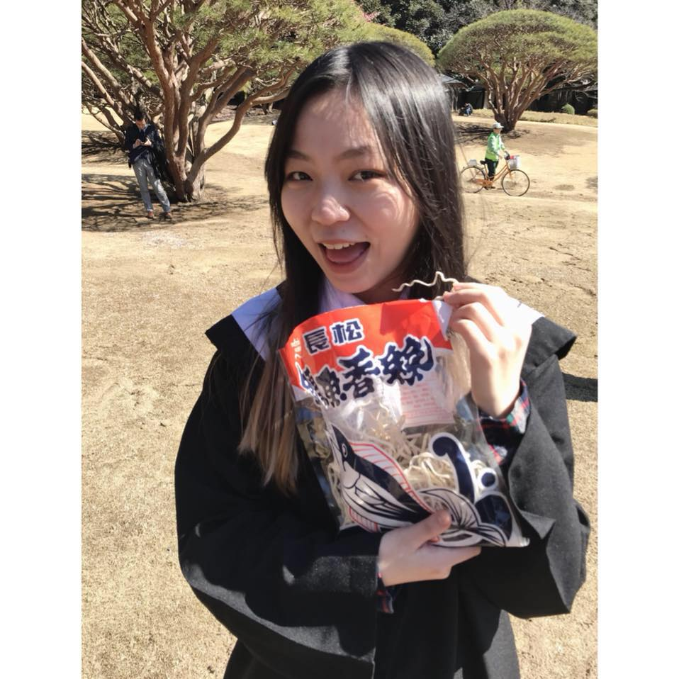
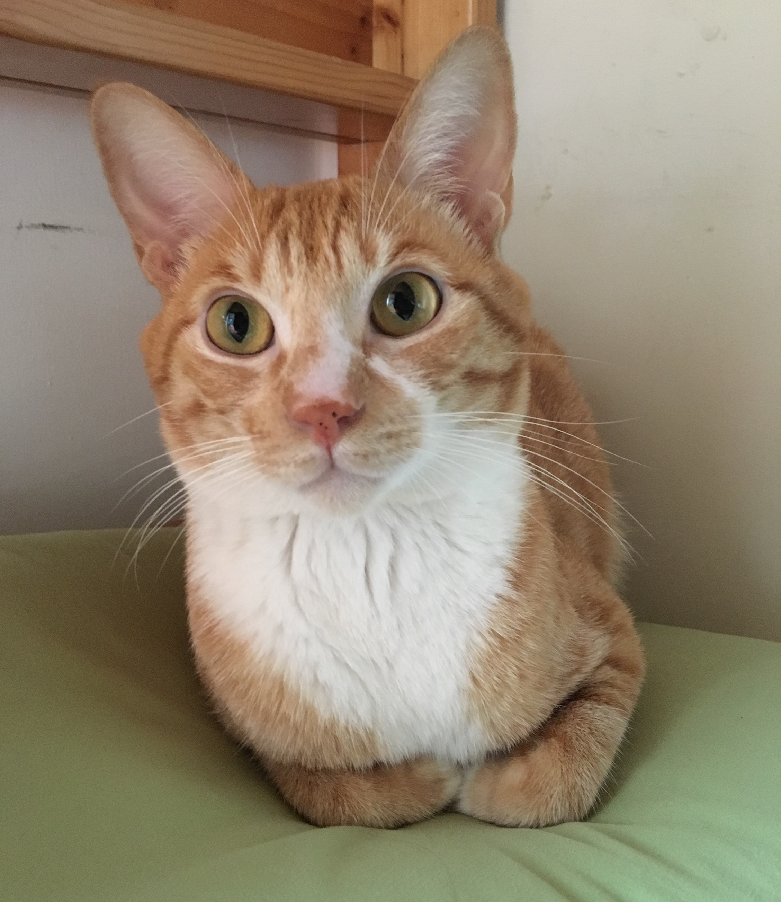
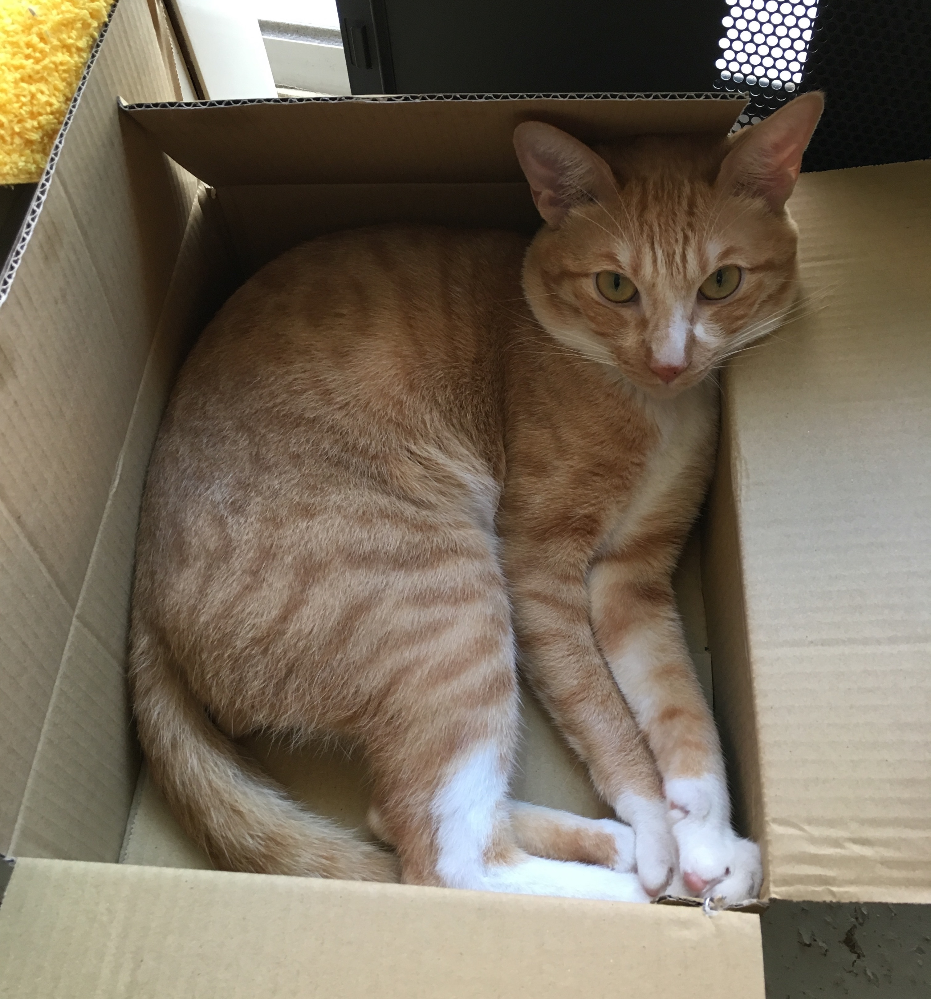
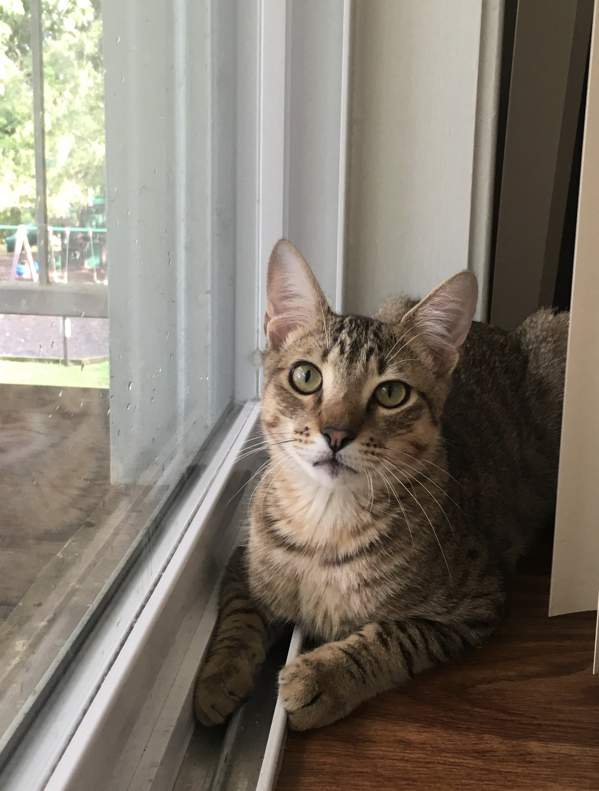
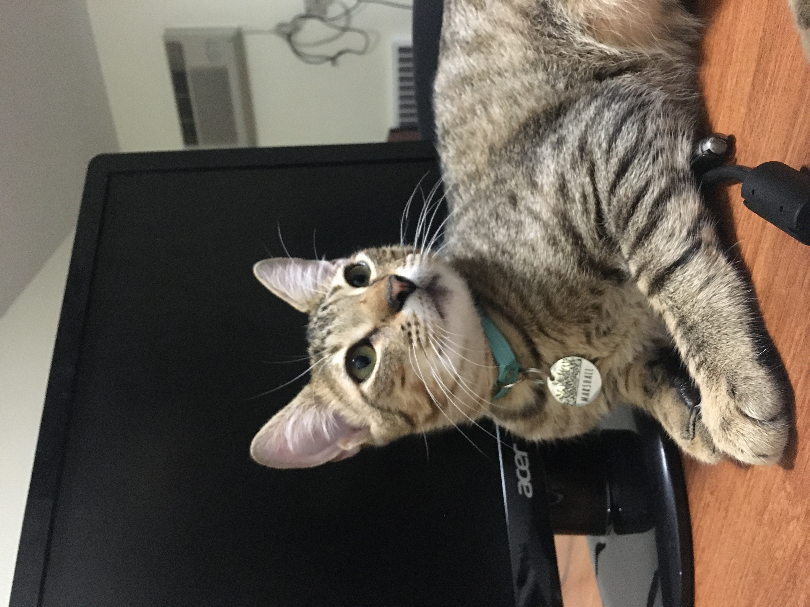

{kind=link}

This is how my cat supervises my work.

I'm a second year Ph.D. student in Department of Computer Science at University of Virginia. My advisors are Prof. David Evans and Prof. Yangfeng Ji. My research interests lie in natural language processing and adversarial machine learning. I'm currently working on adversarial natural language processing, finding negative results in state-of-the-art NLP models, and why these models sometimes fail in unexpected ways. I received my B.S. degree in Information Management from Chang Gung University.
Integrated crowdsourcing information to gain further insight into ongoing cyber attacks by identifing and encoding vulnerability alerts, and correlated them with the associated discussions from Twitter.
Designed new lightweight cryptosystems for IoT devices in eHealth environments
Analyzed the elders’ health and mental conditions by tracking the data of their activities and emotions, and provided meaningful graphs and charts for medical staff.
Caution: Cuteness overload.
This is my first cat I adopted when I was 16.

This is how my cat supervises my work.

He has claimed my bed including pillow as his territory.

There is no place like box.
This is my second cat, Marshall. I adopted him during my 2nd year of PhD.

He looks innocent, but he's truly a devil sometimes...

He's a nice companion while working from home.

He loves to sleep beside my monitor or on my laptop's keyboard.
{kind=link}
{kind=link}
{kind=link}
{kind=link}